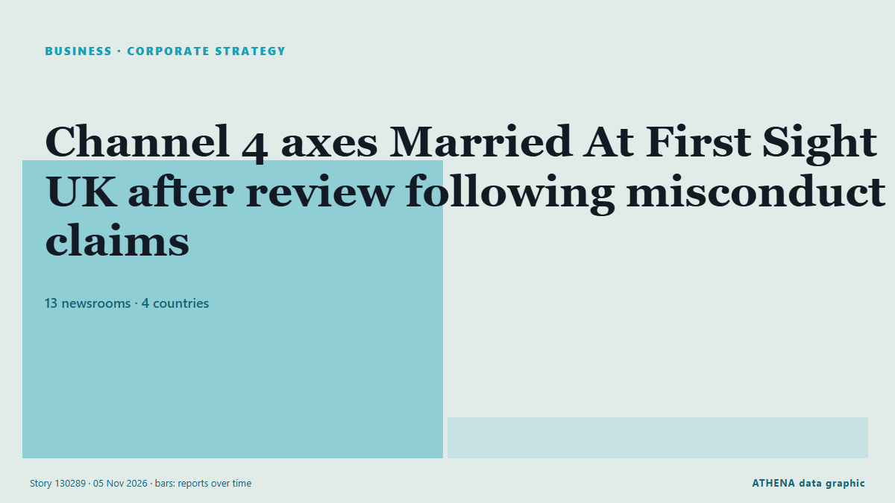

Medios y desinformación
PatrocinadoPresentado por  Cybernetics and Artificial Intelligence Lab Welcome to the Cybernetics and Artificial Intelligence Laboratory, established at the Department of Business Administration of the National and Kapodistrian University of Athens. The lab is headed by Professor Dimitrios Thomakos. The lab aims to do research that can be published in top venues. Our research uses tools and methods of Artificial Intelligence, and lies in the following areas: - Forecasting - Decision making - Cyber security - Finance We are always looking forward to collaborating with exceptional students!
Cybernetics and Artificial Intelligence Lab Welcome to the Cybernetics and Artificial Intelligence Laboratory, established at the Department of Business Administration of the National and Kapodistrian University of Athens. The lab is headed by Professor Dimitrios Thomakos. The lab aims to do research that can be published in top venues. Our research uses tools and methods of Artificial Intelligence, and lies in the following areas: - Forecasting - Decision making - Cyber security - Finance We are always looking forward to collaborating with exceptional students!
| 24 oct | 0 |
|---|---|
| 25 oct | 0 |
| 26 oct | 0 |
| 27 oct | 1 |
| 28 oct | 0 |
| 29 oct | 0 |
| 30 oct | 0 |
| 31 oct | 0 |
| 1 nov | 1 |
| 2 nov | 5 |
| 3 nov | 4 |
| 4 nov | 4 |
| 5 nov | 9 |
| 6 nov | 0 |
Los titulares se muestran en inglés, tal como se publicaron.

Channel 4 axes Married At First Sight UK after review following misconduct claims
Channel 4 chief executive Priya Dogra also confirmed season six of the show, which was filmed earlier this year, would not be broadcast. de The Irish News (Belfast)
Pan-Africa University unveil media fellowship to reframe Niger Delta reporting
PIND, Pan-Atlantic University initiative seeks to strengthen evidence-based reporting, move beyond conflict narratives. de Premium Times
Army foils TTP infiltration attempt in Kurram, retaliates to 'unprovoked' Afghan firing: state media
Security sources say Afghan Taliban posts suffer heavy damage during Pakistani forces' retaliatory action. de Express Tribune
Russell Brand’s Lawyer Rounds On Journalist Who Exposed Brand’s Behavior Outside Court
After Russell Brand was found guilty on one count of rape and three counts of sexual assault this afternoon, his lawyer is reported to have laid into a journalist who helped bring allegations against… de Deadline
Disinformation threatens trust in election results: Researcher
Research has shown that disinformation is threatening trust in election results, and not just voter. de SABC News
Israel's detention of Abou Shhadeh 'a campaign to silence'
Israeli forces detained Palestinian journalist Abed Abu Shehadeh over an interview with Azmi Bishara, as threats against Arab political leaders intensified. de The New Arab
Russians launch propaganda Shahed drone to drop leaflets on Kyiv
A Russian propaganda Shahed drone carrying inflammatory leaflets with a phishing QR code has been shot down over Ukraine. de Ukrainska Pravda (English)
Wike defends high Abuja billboard rates, says ‘politics is expensive’
The Minister spoke to journalists during his monthly media chat in Port Harcourt on Thursday, following outcry by several opposition parties over access to communication media through which voters… de Channels TV
Egypt’s head coach Hossam Hassan banned from all broadcast platforms by media council
Egypt’s Supreme Council for Media Regulation (SCMR) has issued a decree banning national football team head coach Hossam Hassan from appearing across all media outlets governed by Press and Media… de Egypt Independent
Saudi Arabia extends $3B financing rollover to Pakistan
Riyadh provided facility to Islamabad in April after UAE withdrew $3.5B financing. de Anadolu Agency (English)
Colleges 'will need £2.5bn to maintain campuses suitable for teaching'
Colleges will need £2.5 billion of investment to deal with its creaking estate. de The Scotsman
Cyprus and Greece among possible Iranian targets
The British air base Akrotiri in Cyprus, as well as military installations in Greece are among possible Iranian targets according to a map of potential targets published in the Iranian newspaper… de Cyprus Mail
African Union Calls on Governments to End Impunity for Crimes Against Journalists
The African Union Commission and the Federation of African Journalists have urged governments to investigate attacks on media workers, strengthen their protection and ensure perpetrators are brought… de Nile Post
Nicaragua to Free 2,000 Prisoners on 8 Nov
Co-President Rosario Murillo announced that 2,000 prisoners convicted of common crimes will go free on 8 November, the sixth such release of 2026. de The Rio Times
Egypt: We condemn Mada Masr shutdown, stand with editor-in-chief Lina Attalah
We, the undersigned organisations, condemn in the strongest terms the conviction of Lina Attalah, editor-in-chief of the independent Egyptian news outlet Mada Masr, and the court’s order to shut down… de Article 19
Attackers exploit critical Node-RED flaw to deploy Linux bot and backdoors (CVE-2026-58115)
Attackers are exploiting an authentication flaw (CVE-2026-58115) in Node-RED, a programming tool built into some industrial control products, to install a Linux bot and backdoors on unprotected… de Help Net Security
Africa: Six in Seven Journalist Murders Go Unpunished, Unesco Reports
[UN News] Global impunity for journalist killings has risen for the first time in more than a decade, while the growing use of drones is an emerging threat for reporters in conflict zones, according… de AllAfrica
Trump added to Reporters Without Borders Press Freedom Predators list
BERLIN: Reporters Without Borders (RSF) has added US President Donald Trump to its Press Freedom Predators list for 2026, accusing him of intensifying his campaign against media outlets since… de New Straits Times
Ukrainian journalists urge global media not to look away from Russian aggression
"Fellow journalists, do everything in your power to prevent your countries from siding with evil," Ukrainian journalists said in a joint video appeal to their international colleagues. de Kyiv Independent